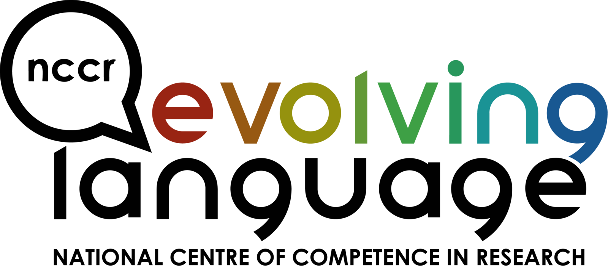

Eklavya Sarkar
PhD graduate from EPFL and Research Assistant at Idiap Research Insitute,
in the speech and audio Processing group, under Dr. Mathew Magimai Doss.
My PhD research focused on self-supervised representation learning for
analyzing
human and non-human vocal communication, for the wider
purpose of studying the evolution of language.
Previously I worked worked on computer vision topics such as deepfakes and face
morphing, as well as physics research and development at CERN in the CMS experiment.
Publications
Work Experience
Research Assistant (PhD Candidate)
Supervisor: Dr. Mathew Magimai Doss, Speech and Audio Processing Group
- Self-Supervised Speech Learning, Representation Learning
- SSL, VAD, Diarization, ASWUs, Bioacoustics
- Audio Segmentation Methods for Analyzing Vocal Communication: From Humans to Animals.
- Low Resource Speech and Animal Vocalizations processing.
- Working on EvoLang Project, TTF Tech ASR.

Research Intern
Supervisor: Dr. Sébastien Marcel, HOD Biometrics Security and Privacy Group
- Developed and released StyleGAN2 latent space editing code for morphing.
- Implemented different techniques to generate traditional and StyleGAN2-based face morphs.
- Investigated vulnerabilities of modern facial recognition systems against morphing attacks.
- Currently researching detection techniques for such attacks to publish paper by November.
(10 months)
Intern
Project Manager: Dr. Archana Sharma, Principal Scientist, CMS Experiment
- Contributed to CERN's CMS-GEM-DAQ project's production code: PR1, PR2.
- Refined efficiency of production code by implementing requested features on Python scripts.
- Improved code used for testing detector in a QC stand by adding an step-size feature.
- Created method for configuring detector’s electrical state with custom values.
- Published real time gas levels of a mixer by writing code to send data to a server via an API.
(3 months)


Thesis
Transferability of Learnt Speech Representations for Decoding Non-Human Vocal Communication
- Investigated learnt speech representations and their transferability to animal vocalizations.
- Published 6+ first-author papers at top ML conferences and journals.
- Research topics: speech processing, self-supervised learning, bio-acoustics, speaker diarization, voice activity detection, domain adaption, acoustic sub-word units, and acoustic tokens.
- Supervised Interns and Master students.
We first formulate and validate our core hypothesis through a proof-of-concept caller detection study on marmoset vocalizations, where multiple pre-trained SSL models are benchmarked. Building on this, we further evaluate their transferability across multiple marmoset datasets, and demonstrate that early layer representations from SSL models such as WavLM outperform traditional handcrafted features for call-type and caller identity classification.
We then explore how differences in auditory bandwidth between humans and animals influence the transferability of such SSL features. We show that bandwidth mismatches can have an impact on performance, and increasing its size yields a monotonic improvement for call-type and caller classification. We also compare SSL models pre-trained on speech with those pre-trained on general audio or directly on animal vocalizations. Our experiments reveal that general-purpose audio pre-training yields comparable performance to human speech pre-training, and the bioacoustics-trained models marginally improve it on specific datasets.
To further improve classification scores, we investigate model adaptation of the pre-trained SSL models. Fine-tuning such speech models on an automatic speech recognition task in a supervised framework does not bring any consistent improvements in performance, and in some cases, actually leads to a performance decline in the later layers. However, parameter-efficient fine-tuning strategies, such as Low-Rank Adaptation (LoRA), combined with selective layer freezing and pruning, achieves significant gains over standard linear probing in specific scenarios, while also reducing training complexity. Our results underscore the importance of LoRA adapter placements, layer selections, and fine-tuning strategies.
Finally, we attempt to leverage the sequential nature of animal vocalizations. While previous experiments temporally averaged extracted features into single vector representations, we use vector quantization frameworks to discretize frame-level SSL features into acoustic token sequences. We evaluate these sequences through Levenshtein-distance analysis and sequence classification, and find that while they preserve some degree of acoustic discriminability, their performance remains well below that of a simple linear classifier applied to averaged functional vectors.
On the whole, this thesis demonstrates that SSL representations learnt from human speech can generalize effectively to animal vocalizations. Our work provides a practical and robust groundwork for computational bioacoustics, as well as a foundation for further bridging machine learning with animal communication science.
Facial Information Extraction
- Attempted to use state-of-the-art deep learning techniques to build models which take an image as input.
- Performed facial detection, recognition, and emotion classification on the present individuals on the images.
- Achieved 95% test accuracy on facial recognition with convolutional neural networks and hyper-parameter tuning.
- Built separate models for tasks such as emotion classification before combining them into an end-to-end models.
- Optimised performance with DL best practices: data augmentation, batch-normalisation, cross-validation.
Grade: Distinction

Kohonen Self-Organising Maps
- Implemented unsupervised machine learning neural network from scratch without using any specific ML library.
- Trained back-end model on 3 different open-source datasets to test neural network’s efficiency and scalability.
- Developed front-end GUI for interactive data visualisation before & after clustering and dimensionality reduction.
- Wrote extensive thesis covering all aspects of project such as system design, algorithmic optimisation, scalability.
Grade: 90%

Exoplanets: Discoveries and Prospects
- 2019 Update: Dider Queloz has since won the Physics Nobel Prize !
- Conducted literature review on Exoplanets, with inputs from Didier Queloz, co-discoverer of the first exoplanet.
- Showed correlations between possibly habitable planets and core laws of physics by analyzing open-source DB.
- 50 page report selected among top 2013 student scientific projects in Geneva canton and Pays de Gex.
- Invited to present project at a public ‘Science Sharing’ event at CERN's Universe de Particules museum.
Grade: 6/6

Projects and Open-source Contributions
Deep Reinforcement Learning: Flappy Bird
Attempted to a develop model which is able to learn to play Flappy Bird, and surpass human level scores by using Reinforcement Learning techniques. Specifically investigated Deep Q-Learning networks to develop an overview of the problem and deeper understanding on reinforcement learning techniques. Wished to showcase how computer vision and deep neural networks such as convolutional neural networks can be used in the context of reinforcement learning as well.

Kaggle Competition: Toxic Comment Classification
Attempted to solve a Kaggle competition in a group of three to the best of our abilities. Specifically strove for implementations beyond the exsiting classical ones, and attempted to develop a model which is well-adapted and fine tuned to the specific problem at hand. Implemented a Naive-Bayes Bag of Words model, Random Forest, Extra Trees, and compared their results with the Log Regression, Convolutional Neural Network, and Long Short-Term Memory Recurrent models.

Bayesian Machine Learning
Used Bayesian modelling methods, specifically Hamiltonian Monte Carlo, to approximate Gaussian posterior distributions on a multivariate regression task to derive a good predictor from the dataset, and estimate which of the input variabels are relevant for prediction.

Open Information Extraction
Attempted to summarise Jules Verne's 20,000 leagues under the seas' by training a classifier that indicates which of the part of speech tags each word is. The approach was based on Identifying Relations for Open Information Extraction (Fader, Soderland & Etzioni). To this end, Glove word vectors were employed to implement a logistic one vs all kitchen sink model, and attempted speech tagging on word and sentence levels, named entity resolution and relation extraction.

Robotics I
Wrote a program using the Java LeJOS framework that enables a robot to explore the arena which contains a small number of obstacles, placed at random locations. There was a single coloured sheet of paper which the robots had to be able to detect using the colour sensor which also signifed the end location, to which the robot had optimally navigate back to the ending position.

Robotics II
Wrote a program using the Java LeJOS framework allowing a robot to determine it's starting location in the arena, and optimally work its way to the pre-determined ending position using scout and doctor agents while avoiding the possible obstacles.

Android Food App
Scran is a user-oriented application that aids in the decision-making process when choosing a restaurant, and more specifically a dish. Scran will maintain, search and track user and restaurant data to help its users to choose the dish they didn’t know they wanted.

Moving Average Filter
Wrote C++ in Xcode to generate random plot and noise values of a sinusoidal function using signal characteristics as parameters, which would then be handled by the designed event driven panels and data structures in LabVIEW, and subsequently transferred to Matlab to be displayed in both filtered and unfiltered states.

Talks
Automatic Speech Segmentation
Hidden Markov Models
Generative Adversarial Networks
Convolutional Neural Networks
Competitions
International Create Challenge
- Developed model to detect and combat adversarial attacks using Foolbox toolkit.
- Implemented website to evaluate the robutness of a given model to adversarial attacks using a specific metric.
- Awarded 3rd place in overall ICC2020.
Facebook Hackathon 2015
Developed iOS app with first generation Swift on xCode.
- Goal was to give students a platform to revise and prepare for exams on the go.
- Content specifically tailored to the common first-year Bachelor course.
- Option of adding content for additional modules and courses by users.
- Hopefully improve the student pass rate at EPFL by providing feedback and tips.

News
CERN Intern
FULL Student feature: My summer Internship at CERN
"Arriving wide-eyed at the main lab on the first day, I discovered that I was among twenty other excited students, from all over the world, ranging from Thailand, Brazil, France, US, India, Italy and many others, all of whom had arrived at different moments during the summer, meaning there was little time for individual introductions to the lab and explanations of the various hardware components and the software code base."
Exoplanet Project Presentation
Selected to present on stage my research project on Exoplanets at the Colloque Transfrontalier: La Science en Partage (a public ‘Science Sharing’ event) at CERN’s Universe of Particles museum.

Education
Ecole Polytechnique Fédérale de Lausanne
Grade: 5.2/6

University of Bath
Grade: First Class

University of Liverpool
Grade: First Class

Skills
- Python: PyTorch, Hydra, Optuna, Sci-kit Learn, OpenCV, SeaBorn, Flask, Pandas, NumPy, Matplotlib
- Java: LeJOS
- Javascript: D3.js, jQuery, AJAX
- SQL: MySQL, MySQL Workbench
- C++: Cern's ROOT
- PHP
- Tex
- Bash, Shell Scripting
- HTML, CSS: Bootstrap
- Git, Github
- Slurm, Sun Grid Engine (SGE) Scheduler
- Unix, Linux
- VSCode
- Mattermost, Slack
- Shell, Bash, Zsh, Tmux, Byobu
Extra-Curricular
Organizer
- Participated in the conception and organization of the series along PIs.
- Responsible for developing the vision, design, and implementation of the event website.
- Helped in finding sponsors, budgeting, and overall event management.

President
- Elected President of Hall Committee by ballot vote majority to represent 270 students.
- Enhanced residents’ experience by taking charge and managing events throughout the year.
- Responsible for formulating outline and implementation of vision for Hall’s community and life.
- Led 10 member committee through generating team vision and chairing weekly meetings.
- Maintained professional relationship with residence staff, guild of students, accommodation office and the university.

Interests
- Dance: Bachata (Geneva Bachata Festival 2024, 25), Salsa
- Indie Game Development
- Football Blog posts
- Game of Thrones Expert
- Art - Graphic Design, Wacom Tablet
- Martial Arts - Karaté Green Belt
- Swimming - UK Swimathon 2018, 1.5 km challenge
- Film - Brighton Film School, Summer Filmmaking Diploma
- Project Why NGO Volunteer, New Delhi, India
- Skiing
Blog
Game Reviews
- Gripping, complex, layered, and emotional story leading to an overall very heavy, raw, and visceral experience. Set in the backdrop of a very well realized collapsed society, the storytelling itself is also as exceptional as the story. Every single cutscene feels absolutely earned after difficult and often long sequences. Certain cutscenes left my hand shaking. Despite not being an "horror" game, it is a very anxiety-inducing and frightening game. I've never felt so much dread in a game ever. But at the same time the game is groundbreaking, focusing primarily on the themes of loss, grief, the cycle of violence, and the price ultimately one pays to pursue revenge and retribution.
- Very refined and heart-stopping gameplay, including stealth, adventure-action, and puzzles. There are a number of sequences that just feel unreal. Game also keeps evolving and adding new enemy factions and mechanisms. Overall I found the game quite 'hard' to play, but it's also very hard to pick a "favourite part", as there are so simply too many !
- Captivating, complex, and fully realized primary and supporting characters. The 19 year old Ellie is really something to behold.
- The most beautiful game visuals you might ever see. The fires and forests especially stand out.
- Phenomenal, movie-level game audio and sound, which change the tone and move the story beats ever so slightly.
- Game should've been slightly shorter, though I can see what they were going for. It's purposefully intended that you feel the drag as you go into the final act. Regardless, I think one starts caring less at this point as the catharsis still hasn't happened.
- I felt like the game should've had around three jump scares less, most of those being in the first half.
Overall, undoubtedly one of the best games ever to have ever been made, successfully transcending any 'genre', and perhaps my favorite. An ambitious masterpiece by Naughty Dog, and a deserving successor that even surpasses the original game.
- Immersive world and story which quickly grip you right from the start. Pacing is pretty good, and things move at a reasonable pace. The story is of a significant size and each act is pretty long, but well-executed.
- Perhaps the most 'sci-fi' game I've ever played. Each element, from the menu, to the world design is impressive, well thought through, and developed.
- Story, mission design, and visual design are very diverse and entertaining. Night City is a vibrant and atmospheric metropolis and amazing to explore especially at night.
- Arguably the greatest ever made DLC expands the game even more.
- There is a bit too much dialogue for me, towards the end I would stop reading and just click on any option.
- Despite being mostly bug-free, there were still a few repetitive bugs which made the experience less enjoyable. But kudos for the team to keep releasing patches and novel content.
All in all, there might be some minor flaws, but those pale in comparaison to the mammoth storytelling experience and ambitiousness of the whole game. Leaves you with unforgettable feelings when the credits finally roll.
- Arguably the best spider-man story ever told on screen. Light-hearted, engaging, fun, yet serious and compelling when needed, it's a full-course balanced meal of Peter Parker.
- Extremely well polished game, visually. The graphics are high-quality and highly optimized, giving a very smooth experience. The first time playing, it feels like living in the future, when one can fully swing around in a fully-realized NYC, at day or night.
- The wide variety of suits, gadgets, podcasts, and side-quests really animate the NYC open-world.
Overall, perhaps the greatest and most satisfying superhero game ever made through love and passion for the titular character. An absolute blast from the start to the end. No negatives.